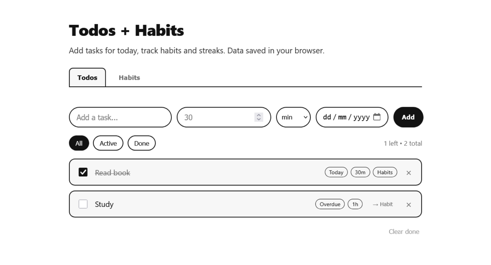
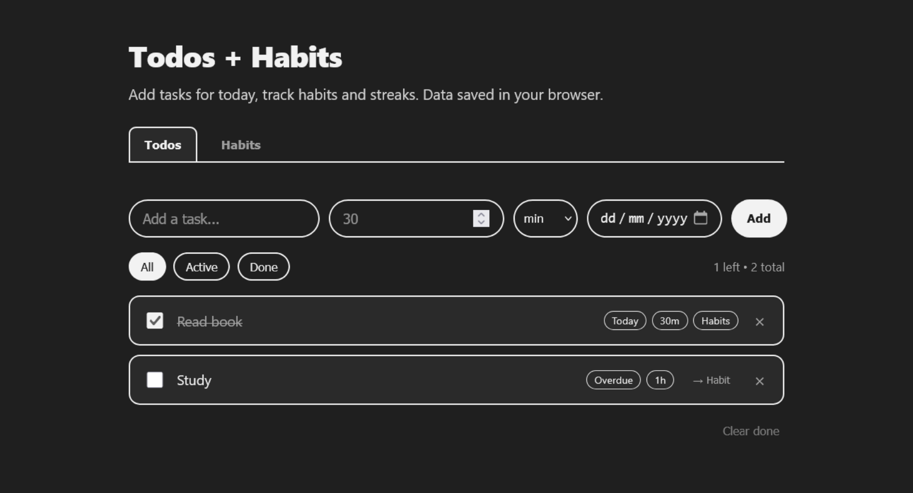

Daily Tracker — Todos + Habits
A minimal daily productivity app with two modules: todos (add/complete/filter) and habits
(daily check + streak). Built with vanilla HTML/CSS/JS and localStorage, no frameworks. Built to practice
fundamentals.


Project Details / Background
I wanted a small, contained project to practice web fundamentals before moving on to
anything more complex so I picked something that has a purpose: a todos + habits tracker. Scope was
deliberately
kept small, and both modules share the same CRUD pattern (add → list → toggle → delete → persist), which made
the second module faster to build once the first was working.
Tech: HTML (semantic forms/lists), CSS (variables + flex), JS (DOM,
arrays, dates, localStorage). Data saved under keys `daily-tracker-todos` and `daily-tracker-habits`. Today
helper at `app.js:getTodayString()` uses `YYYY-MM-DD` for easy streak math.
What I learned: Tab switching without framework (toggle `.active`
class), filtering todos by `active/completed`, and streak logic: if lastDone is yesterday increment else reset
to 1. A bug fix that took a bit longer was handling undo for habits without breaking streak.
Next: Add Expenses module (amount + totals) as v2 — same pattern with a
new math.
Features